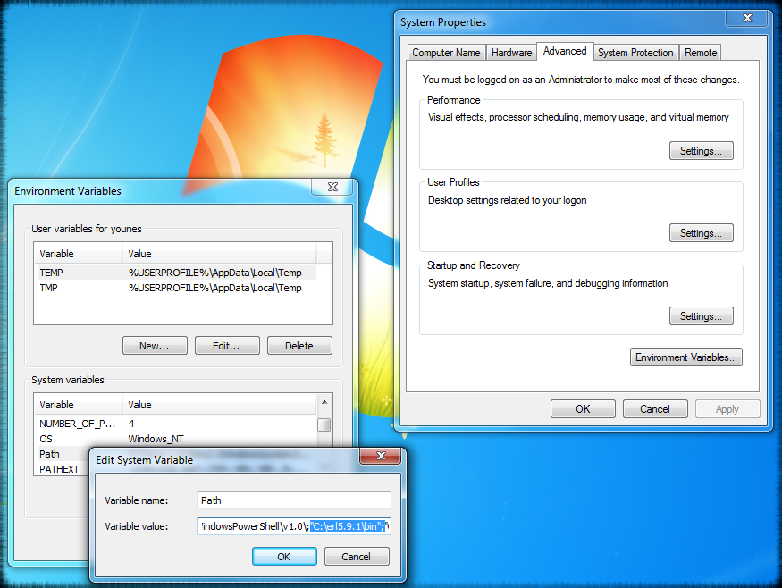

Windows
Depending on your architecture (32/64-bit), download the right binary for Windows at:
Then, follow the standard install procedure using the wizzard.
Step 1/4
Install wizard for Windows
Please, make sure the Microsoft Visual C++ 2010 Redistributable Package has been installed on your system correctly.
For this:
a. check the Microsoft DDL’s (present) checkbox in the Erlang installer.
b. or manually download the package from the Microsoft’s download center
website.
Step 2/4
Pay attention to the destination folder name and select one without spaces.
Avoid: “c:\Program Files”, “c:\Program Files (x86)”, “C:\Program Files (x64)”, etc.
and prefer: c:\erl5.9.1\ for Win32 and c:\x64\erl5.9.1\ for Win64.
Step 3/4

Adjust your Path system environment variable by appending the fullpath to
Erlang’s binaries: c:\erl5.9.1\bin;
Now, you can run the Erlang’s VM from everywhere.
Step 4/4
The preferred way to start the Erlang system for interactive use on Windows is:
Linux
Linux installation could be performed by compiling Erlang from source (advanced users)
or by installing pre-compiled binaries. This second option is highly recommended.
Binaries (.rpm, .deb) for all major distributions (Debian, Ubuntu, CentOS, Fedora,
etc.) are available at:
Repositories are also available to use with your favourite packages manager.
Once installed, your Erlang VM should be under:
Append this to your PATH environment variable:
$ export PATH=$PATH:/usr/local/lib/erlang/bin
To make this persistent (system wide or user specific), use one of the
following
files or better check with your distribution:
/etc/profile.local
/etc/bash.bashrc.local
$HOME/.profile
$HOME/.bashrc
Mac OSX
DMG install wizard is also provided to Mac users. The install procedure is almost identical to Linux.
Grab one that fits you at:
Once installed, your Erlang VM should be under:
Append this to your PATH environment variable (see above how to make it persistent):
$ export PATH=$PATH:/usr/local/lib/erlang/bin
Finaly, check everything’s fine:
Other Operating Systems
Drop us a line if interested to use QUARTZ on
FreeBSD, SmartOS, etc.
We’ll provide you with a detailed instructions and binaries.